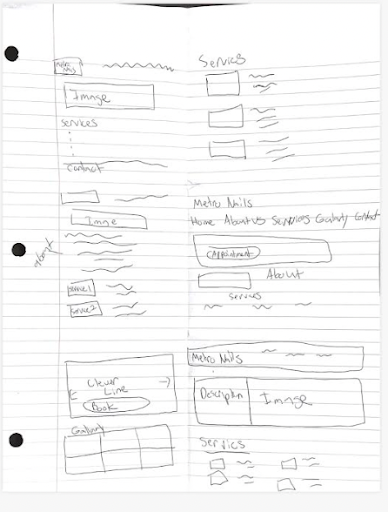
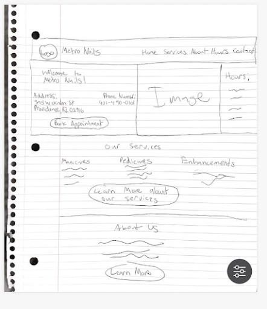
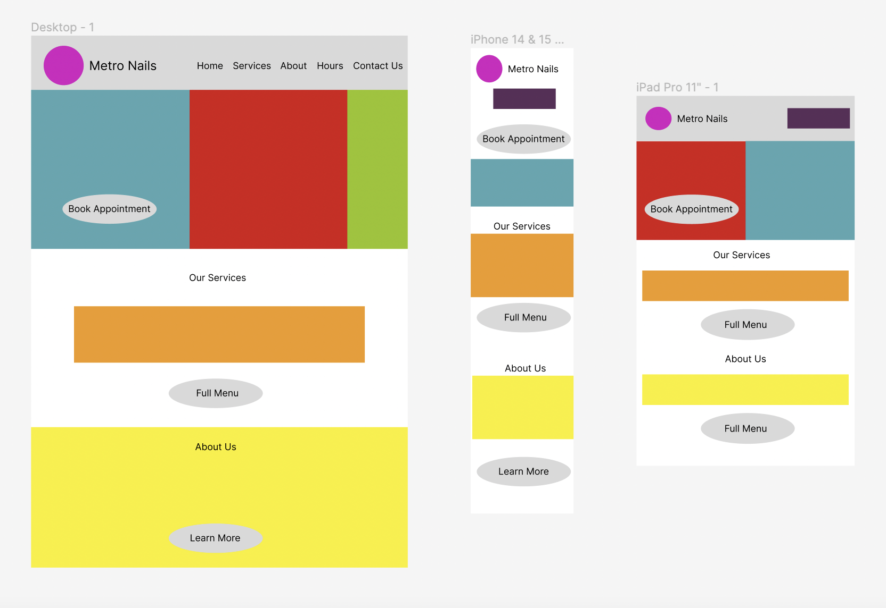
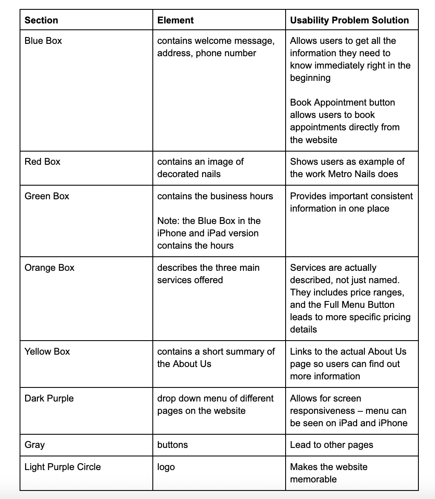
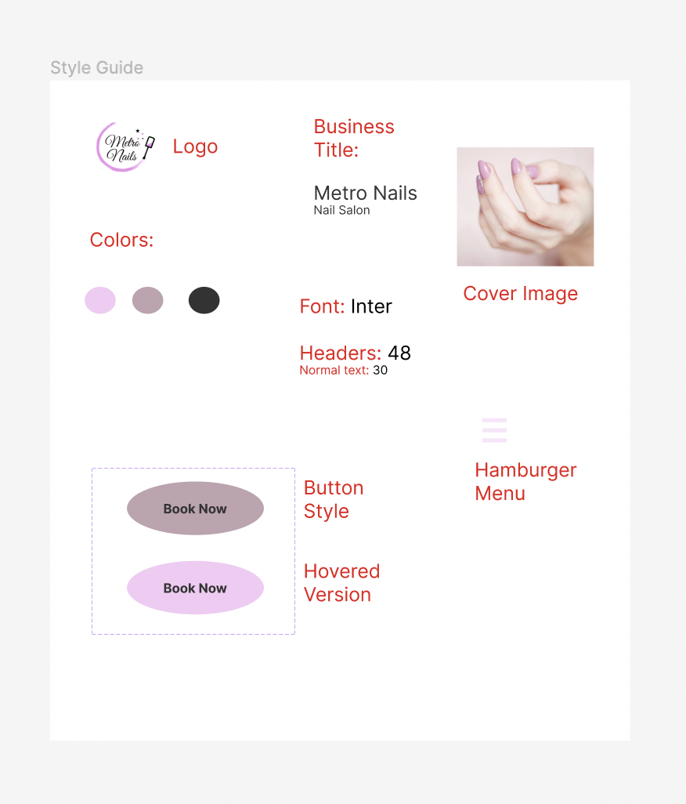
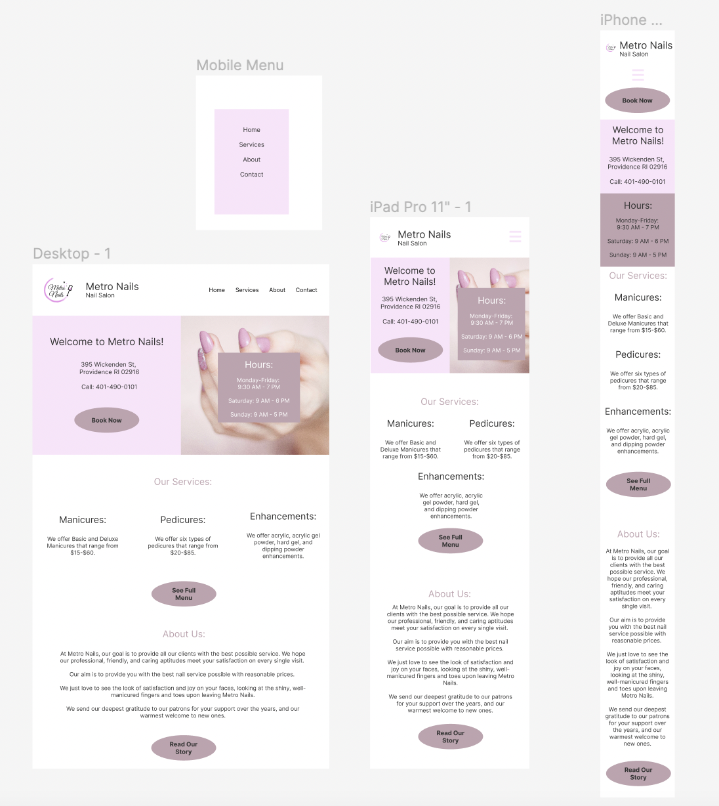
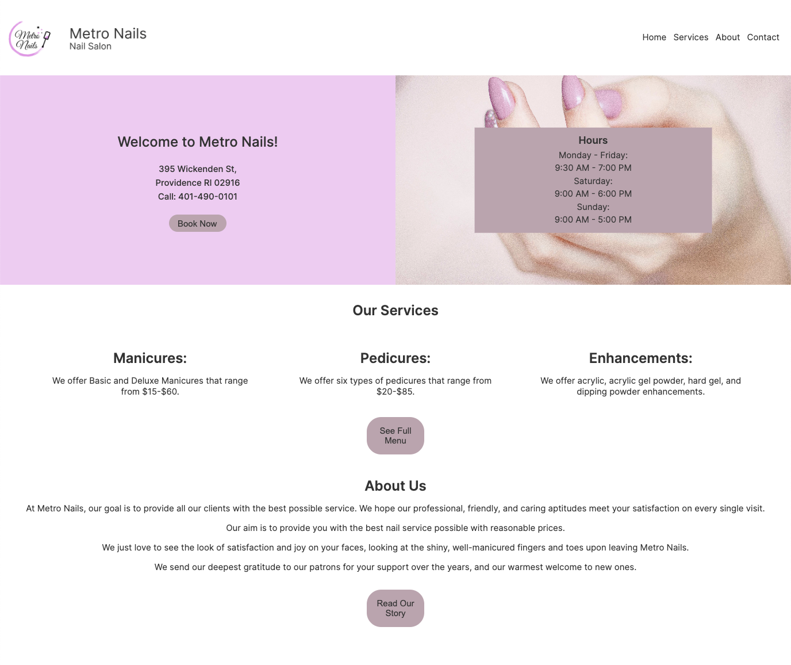

Introduction
For this project, I was tasked with redesigning the homepage for the Metro Nails Website. Metro Nails is a local Providence nail salon. The website, which is hosted by Google Sites, used a template that hasn't been properly updated to reflect Metro Nail's individuality. You can see it below:

I chose this website to update because I am a patron of Metro Nails and in the past, I have had trouble using this website to find information. It doesn't make its services, hours, and contact information clear. In addition, the website is not very responsive. Some information on the mobile version is practically unreadable.
Identifying Usability Problems
Based on my observations, this website has quite a few usability problems. I present them in the list below:
Efficiency
- A lot of empty space that can be used to store additional information – hinders user efficiency because they can’t book appointments or find out certain information like hours, price range, etc on the home page
- There are no hours listed on the home page (and the listed hours are different on the Hours page and the Contact page) – forces users to go to different pages to find out that information
Learnability
- Unclear what the price range is of their services because all that is listed are three broad categories
- “Our Services Menu” link leads to nothing
- Lists different list of services on Home page then on Services page, so users may not know where to look
Memorability
- Because info is in different places, users may not remember where they found the most accurate information last time
- If links don’t work, users may not remember which links work and which links don’t
I also discovered some accessibility problems. The WebAIM Wave tool did not work for this site, but the Lighthouse report gave it a score of 89 on accessibility. According to the report, image elements do not have [alt] attributes. In addition, background and foreground colors do not have a sufficient contrast ratio.
Visual Redesign
First, I sketched out nine options for my design in a round of speed sketching (they aren't super organized, but I tried my best!):
Afterwards, I made a final sketch that incorporated my favorite design elements from some of my sketches. This served as my final base. I am definitly not an artist, but I had fun drawing out my design on a piece of paper.
Low-Fidelity Wireframing
Using my final sketch as a reference, I create one wireframe for each screen size (mobile, tablet, and desktop).
I made a chart annotating my wireframe, with each colored section corresponding with the following elements and usability problem solutions:
Visual Design Style Guide
I then created this visual design style guide for my new webpage design:
High-Fidelity Mockup
Using Figma, I created a total of three high-fidelity mockups of my page, one for each of the screen sizes (mobile, tablet, desktop). These were based on the low-fidelity wireframes, with a few minor tweaks made as I saw how the website came together visually.
I made a few bigger changes to the overall content of the original webpage with these designs. First, I eliminated the text about the Gift Cards. I felt that this distracted from the point of the webpage and decided that if I were to redesign the entire website, I would move the Gift Card content to another page. I also added a “Book Now” button that would hypothetically take users to a different page where they could book appointments. This would allow users to quickly reserve an appointment without calling, while also allowing Metro Nails to more easily organize their appointments. Finally, I edited the images featured on the webpage. I eliminated the image of the city because it is not relevant to the business, and I got rid of the service images because I felt they took up space that could have been used to actually describe the services. If I were redesigning the entire website, I would add a gallery of Metro Nails’ finished products on another page.
Responsive Redesign
Finally, I moved on to making my redesigned webpage. This was a challenge because this was my first time making a responsive website. I struggled the most with making a hamburger-style menu for the tablet and mobile versions of the website. Though I am not 100% happy with its design, I was able to get it to work using this really informative YouTube video.
I also made the mistake of waiting to deploy my website after I was done coding, so I didn’t know what the accessibility score was going to be. I discovered once I deployed the website that there were certain elements of my original design that did not have good color contrast, including the text on the business hours menu and the “Our Services” and “About Us” headings. Consequently, those text colors ended up different from my Figma mockup. This taught me that I should be testing accessibility as I am coding, not after I am done. If I had a more complicated accessibility problem, I may have had to redo the whole thing. Luckily, after some color correcting, I got my Lighthouse accessibility score up to 100.
Though my website is pretty responsive and reflects my intended goals outlined in my Figma mockup, the website does start to get less responsive when it gets to around 320px wide, the size of an iPhone SE. However, the website currently works for a normal size iPhone and in the future I will work towards a design that will fit at an even smaller screen.
You can check out my website at this link!
Reflection
This was my first entirely front end project and I gained valuable insights into the workflow of website building. I also learned a lot about what makes a website accessible and responsive. In addition, I became more familiar with Figma, HTML, and CSS. I appreciated getting to redesign a website that I use often. I am excited to carry the skills I learned from this project onwards to future front-end projects.